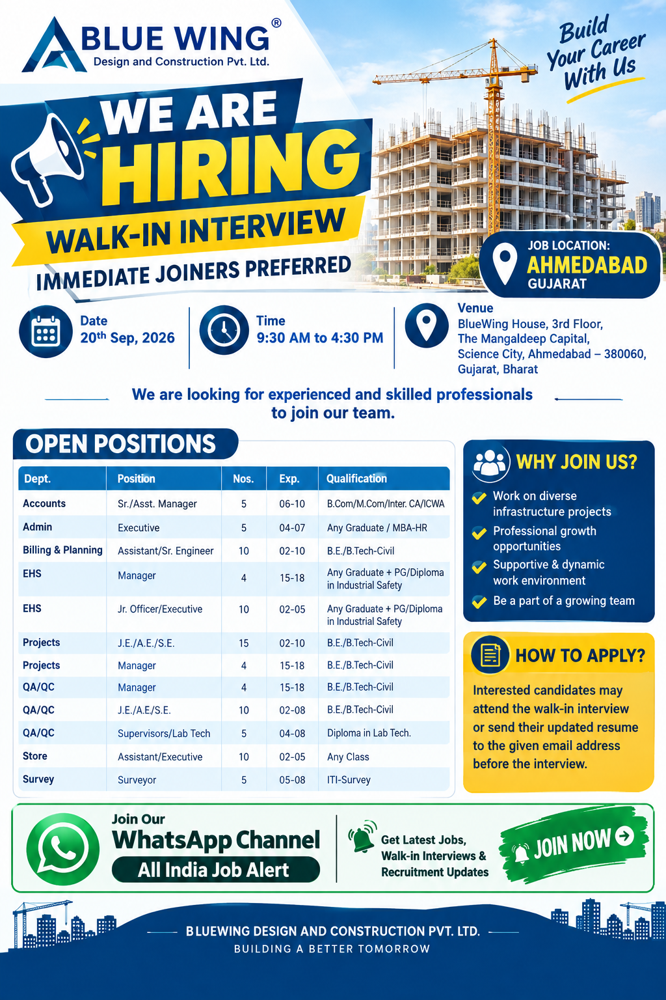

📢 All India Job Alert WhatsApp Channel
Latest private jobs, construction vacancies, engineering jobs, walk-in interviews and recruitment updates ke liye hamara WhatsApp Channel join karein.
JOIN ALL INDIA JOB ALERTAll India Job Alert
BlueWing Design and Construction Recruitment 2026
BlueWing Design and Construction Pvt. Ltd. has announced a major recruitment opportunity for experienced and skilled professionals in Ahmedabad, Gujarat. The company is conducting a walk-in interview on 20th September 2026 for multiple positions across Accounts, Admin, Billing and Planning, EHS, Projects, QA/QC, Store and Survey departments. Candidates who meet the required experience and qualification criteria can attend the interview during the specified timing.
This recruitment drive provides opportunities for professionals from different backgrounds within the construction and infrastructure industry. The available positions range from junior and executive levels to senior management positions. Candidates should carefully review the experience and qualification requirements before attending the interview.
The walk-in interview is scheduled from 09:30 AM to 04:30 PM. The interview venue is BlueWing House, 3rd Floor, The Mangaldeep Capital, Science City, Ahmedabad – 380060, Gujarat, Bharat. Candidates should plan their travel in advance and arrive within the interview timing.
Walk-in Interview Details
📅 Date: 20th September 2026
⏰ Time: 09:30 AM to 04:30 PM
📍 Venue:
BlueWing House, 3rd Floor,
The Mangaldeep Capital, Science City,
Ahmedabad – 380060, Gujarat, Bharat
🏢 Company: BlueWing Design and Construction Pvt. Ltd.
Current Open Positions
1. Accounts – Sr./Asst. Manager
Vacancies: 5
Experience: 06–10 Years
Qualification: B.Com / M.Com / Inter. CA / ICWA
This position is suitable for experienced accounting professionals who have relevant experience in accounts and financial activities. Candidates should clearly mention their accounting background, previous employers and relevant responsibilities in their CV. Professionals with construction or project-related accounting experience can highlight their practical exposure.
2. Admin – Executive
Vacancies: 5
Experience: 04–07 Years
Qualification: Any Graduate / MBA-HR
The Admin Executive opening is suitable for candidates with administration, office management or HR-related experience. Applicants should mention their experience in documentation, coordination, employee support and other administrative activities where applicable.
3. Billing & Planning – Assistant/Sr. Engineer
Vacancies: 10
Experience: 02–10 Years
Qualification: B.E./B.Tech – Civil
Civil engineering professionals with experience in billing, planning, quantity-related activities or construction coordination can consider this opening. Candidates should mention their previous projects, billing responsibilities, planning experience and relevant technical skills in their updated resume.
4. EHS – Manager
Vacancies: 4
Experience: 15–18 Years
Qualification: Any Graduate + PG/Diploma in Industrial Safety
This senior-level position is intended for experienced EHS and safety professionals. Candidates should highlight their safety management experience, construction exposure, team leadership and relevant industrial safety qualifications.
5. EHS – Jr. Officer/Executive
Vacancies: 10
Experience: 02–05 Years
Qualification: Any Graduate + PG/Diploma in Industrial Safety
Candidates with 2 to 5 years of EHS or construction safety experience can consider this opportunity. Relevant site safety responsibilities, inspections, documentation and safety coordination experience should be clearly mentioned in the CV.
6. Projects – J.E./A.E./S.E.
Vacancies: 15
Experience: 02–10 Years
Qualification: B.E./B.Tech – Civil
Civil engineering professionals with project execution and site experience can apply for the J.E., A.E. or S.E. category according to their experience level. Applicants should mention their construction projects and actual site responsibilities.
7. Projects – Manager
Vacancies: 4
Experience: 15–18 Years
Qualification: B.E./B.Tech – Civil
Experienced civil professionals with 15 to 18 years of experience can consider the Project Manager position. Candidates should highlight major projects handled, team management, project execution and coordination experience.
8. QA/QC – Manager
Vacancies: 4
Experience: 15–18 Years
Qualification: B.E./B.Tech – Civil
The QA/QC Manager opening is suitable for senior civil engineering professionals with strong quality-management experience. Candidates should clearly mention their previous QA/QC responsibilities and construction project experience.
9. QA/QC – J.E./A.E./S.E.
Vacancies: 10
Experience: 02–08 Years
Qualification: B.E./B.Tech – Civil
Candidates with civil engineering qualifications and practical quality-control experience can apply. Relevant inspection, testing, quality documentation and site coordination experience should be included in the resume.
10. QA/QC – Supervisors/Lab Tech
Vacancies: 5
Experience: 04–08 Years
Qualification: Diploma in Lab Tech.
This opening is suitable for candidates with laboratory or quality testing experience. Applicants should mention their relevant laboratory, testing, inspection and documentation responsibilities.
11. Store – Assistant/Executive
Vacancies: 10
Experience: 02–05 Years
Qualification: Any Class
Candidates with experience in construction stores or project stores can consider this position. Relevant material receiving, stock management, inventory records, material issuing and documentation experience should be clearly mentioned.
12. Survey – Surveyor
Vacancies: 5
Experience: 05–08 Years
Qualification: ITI – Survey
Experienced surveyors with 5 to 8 years of experience can apply. Candidates should mention their surveying experience, construction projects and relevant technical responsibilities in their CV.
Vacancy Summary
| Department | Position | Vacancies | Experience |
|---|---|---|---|
| Accounts | Sr./Asst. Manager | 5 | 6–10 Years |
| Admin | Executive | 5 | 4–7 Years |
| Billing & Planning | Assistant/Sr. Engineer | 10 | 2–10 Years |
| EHS | Manager | 4 | 15–18 Years |
| EHS | Jr. Officer/Executive | 10 | 2–5 Years |
| Projects | J.E./A.E./S.E. | 15 | 2–10 Years |
| Projects | Manager | 4 | 15–18 Years |
| QA/QC | Manager | 4 | 15–18 Years |
| QA/QC | J.E./A.E./S.E. | 10 | 2–8 Years |
| QA/QC | Supervisors/Lab Tech | 5 | 4–8 Years |
| Store | Assistant/Executive | 10 | 2–5 Years |
| Survey | Surveyor | 5 | 5–8 Years |
Why Consider This Recruitment?
The BlueWing recruitment drive offers opportunities across several important departments within construction and project operations. Professionals from civil engineering, safety, quality, accounts, administration, stores and surveying backgrounds can check the available positions and identify the role that best matches their experience.
The vacancy list includes both technical and management positions. Senior professionals can consider managerial openings in Accounts, EHS, Projects and QA/QC, while candidates with lower or mid-level experience can check engineering, executive, supervisor and survey positions. This makes the recruitment drive suitable for a broad range of construction-sector professionals.
Candidates should prepare a professional and updated resume before attending the interview. The CV should contain accurate information about educational qualifications, total experience, previous employers, project names, job responsibilities and technical skills. Applicants should not provide false or misleading information.
How to Prepare for the Walk-in Interview
Candidates attending the walk-in interview should arrive at the venue during the specified interview hours. It is recommended to carry an updated resume and relevant qualification or experience documents. Candidates should be prepared to explain their previous project experience, current or previous designation, key responsibilities and technical skills.
Civil engineering candidates should be ready to discuss their construction-site experience, project execution, planning, billing, QA/QC or surveying responsibilities depending on the position. Safety professionals should be prepared to explain their EHS experience and safety qualifications. Accounts and administration candidates should be ready to discuss their relevant professional responsibilities.
Documents Candidates Should Carry
- Updated Resume / CV
- Educational Qualification Documents
- Relevant Experience Certificates
- Government ID Proof
- Recent Passport-size Photographs
- Relevant Technical or Professional Certificates
Job and Interview Location
Interview Location:
BlueWing House, 3rd Floor,
The Mangaldeep Capital,
Science City,
Ahmedabad – 380060,
Gujarat, Bharat
How to Apply
Interested and eligible candidates can attend the walk-in interview on 20th September 2026 between 09:30 AM and 04:30 PM.
Candidates may also send their updated resume by email before attending the interview.
📧 Resume Email:
career@bluewingconstruction.com
📞 Contact Us:
+91 8734079262
+91 9016256450
🌐 Website:
www.bluewingconstruction.com
📍 Interview Venue:
BlueWing House, 3rd Floor, The Mangaldeep Capital,
Science City, Ahmedabad – 380060, Gujarat, Bharat
Candidates should mention the position they are applying for and carry an updated CV. Final selection and employment conditions will be subject to the company's recruitment process.
📲 More Job Updates
Ahmedabad jobs, Gujarat jobs, construction jobs, Civil Engineer vacancies, QA/QC jobs, EHS jobs, Project Manager jobs and walk-in interview updates ke liye All India Job Alert WhatsApp Channel join karein.
JOIN WHATSAPP CHANNELAll India Job Alert
Important Information for Candidates
Candidates should carefully verify the position, experience, qualification, interview date and venue before travelling. Recruitment requirements can change, so applicants should confirm the latest information with the company.
Candidates should never pay money to anyone promising guaranteed selection, interview or employment. Do not share OTPs, passwords, banking PINs or other sensitive financial information with unknown persons.
The recruitment information on this page is based on the vacancy details provided for the BlueWing Design and Construction walk-in interview. Final selection, salary, joining conditions and other employment terms are subject to the company's recruitment process.
Frequently Asked Questions
When is the BlueWing walk-in interview?
The walk-in interview is scheduled for 20th September 2026.
What is the interview timing?
The interview timing is 09:30 AM to 04:30 PM.
Where is the interview being conducted?
The interview will be conducted at BlueWing House, 3rd Floor, The Mangaldeep Capital, Science City, Ahmedabad – 380060, Gujarat, Bharat.
Which departments have vacancies?
Vacancies are available in Accounts, Admin, Billing & Planning, EHS, Projects, QA/QC, Store and Survey.
How can candidates apply?
Candidates can attend the walk-in interview and can also send their updated resume to career@bluewingconstruction.com.
Can candidates contact the company?
Yes. The listed contact numbers are +91 8734079262 and +91 9016256450.
Final Words
BlueWing Design and Construction Pvt. Ltd. has announced multiple career opportunities for professionals in Ahmedabad. The recruitment drive covers Accounts, Admin, Billing and Planning, EHS, Projects, QA/QC, Store and Survey departments. Candidates with the required experience and qualification can attend the walk-in interview on 20th September 2026.
The interview will take place from 09:30 AM to 04:30 PM at BlueWing House, The Mangaldeep Capital, Science City, Ahmedabad. Candidates should carry an updated resume and relevant documents and should carefully check the position that matches their professional experience.
Candidates who cannot immediately attend should use the provided email address to share their updated resume and contact the company for further i